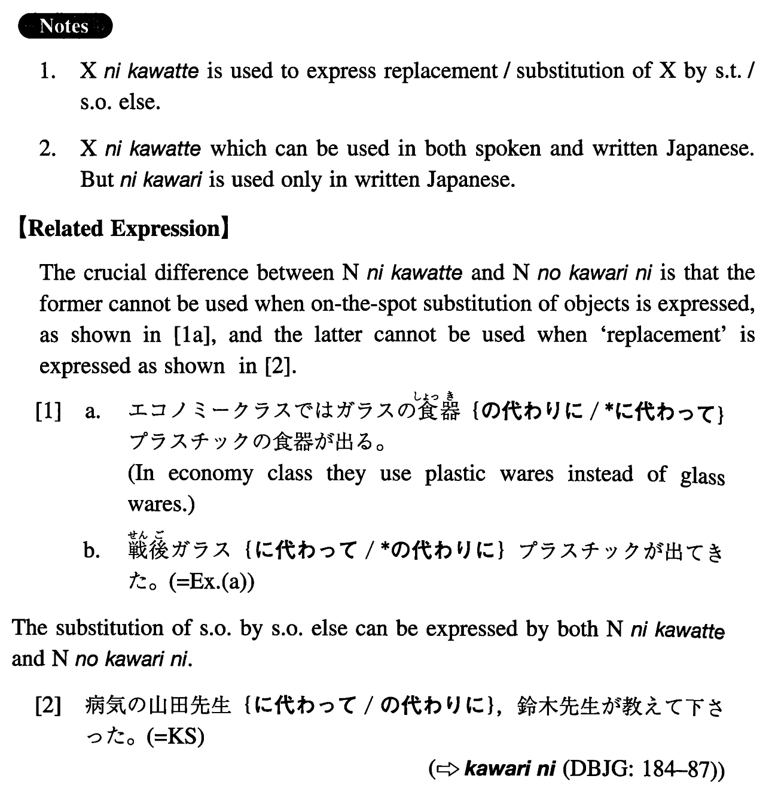

に代わって (I. 254)
- (ks).
- 病気の山田先生に代わって、鈴木先生が教えて下さった。
- In place of Professor Yamada, who is ill, Professor Suzuki taught us.
- (a).
- 戦後ガラスに代わってプラスチックが出てきた。
- After the war plastics became available replacing glass.
- (b).
- レコードに代わってCDが出て、音質がとてもよくなった。
- In place of records, CDs have become available, and the sound quality has improved a great deal.
- (c).
- 私が父に代わって、空港までお客さんを迎えに行った。
- In place of my father, I went to the airport to pick up our guest.
- (d).
- 御出席の皆様に代わりまして、一言ご挨拶を述べさせていただきます。
- On behalf of everyone present here, let me say a word of greeting.
- (e).
- 申し訳ございませんが、社長は今日都合が悪いので、私が社長に代わって参りました。
- I am very sorry that the president was unable to attend, but I have come in his place.
